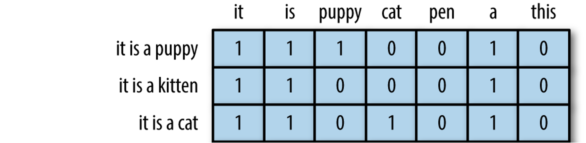
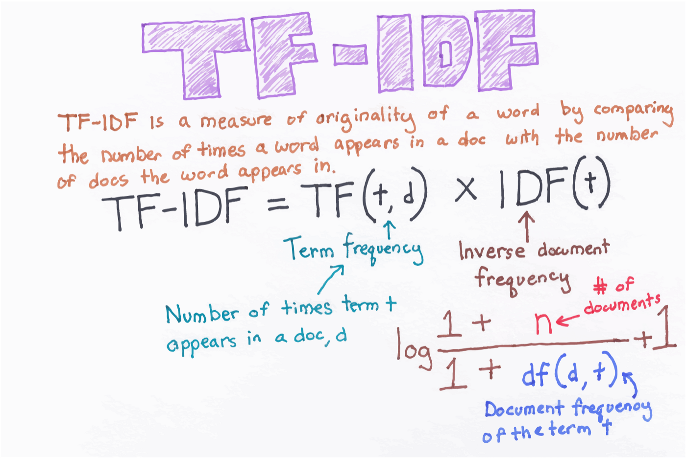
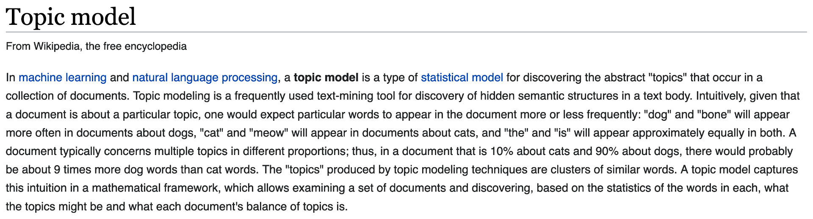
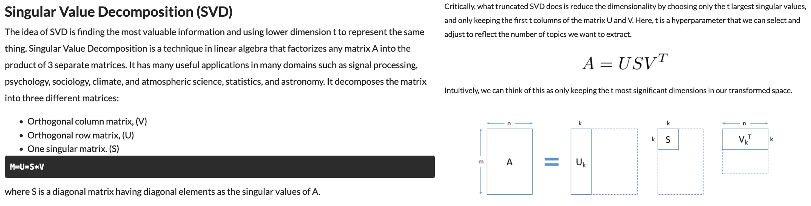

Chapter 3 - Document encoding (TF-IDF), topic modeling, sentiment analysis, building text classifiers
Contents
Chapter 3 - Document encoding (TF-IDF), topic modeling, sentiment analysis, building text classifiers#
2022 February 2
import os
import pandas as pd
from sklearn.feature_extraction.text import CountVectorizer, TfidfVectorizer, TfidfTransformer
from sklearn.decomposition import TruncatedSVD
import nltk
from nltk.corpus import movie_reviews
import numpy as np
from sklearn.utils import shuffle
from sklearn.pipeline import Pipeline
from sklearn.linear_model import LogisticRegression
from sklearn.model_selection import cross_val_score, train_test_split
from sklearn.metrics import roc_curve, roc_auc_score, classification_report, accuracy_score, confusion_matrix
import warnings
warnings.filterwarnings("ignore", category = DeprecationWarning)
---------------------------------------------------------------------------
ModuleNotFoundError Traceback (most recent call last)
Input In [1], in <cell line: 3>()
1 import os
2 import pandas as pd
----> 3 from sklearn.feature_extraction.text import CountVectorizer, TfidfVectorizer, TfidfTransformer
4 from sklearn.decomposition import TruncatedSVD
5 import nltk
ModuleNotFoundError: No module named 'sklearn'
Document encoding for machine learning#
In the last chapter you saw that we do not change text to numbers, but instead changed the representation of the text to the numbers in sparse matrix format.
In this format, each row represents a document and each column represents a token from the shared text vocabulary called a feature.
Key terms#
Document term matrix: contains the frequencies (or TF-IDF scores) of vocabulary terms in a collection of documents in sparse format.
Each row is a document in the corpus.
Each column represents a term (uni-gram, bi-gram, etc.) called a feature.
Bag of words: The simplest text analysis model that standardizes text in a document by removing punctuation, converting the words to lowercase, and counting the token frequencies.
Numeric values indicate that a particular feature is found in a document that number of times.
A 0 indicates that the feature is not found in that document.

modified from “The Effects of Feature Scaling: From Bag-of-Words to Tf-Idf”
TF-IDF: Term frequency–inverse document frequency; a weighted numerical statistic that indicates the uniqueness of a word is in a given document or corpus.
For TF-IDF sparse matrices:
A value closer to 1 indicate that a feature is more relevant to a particular document.
A value closer to 0 indicates that that feature is less/not relevant to that document.


Topic modeling#

Corpus definition: United Nations Human Rights Council Documentation#
We will select eleven .txt files from the UN HRC as our corpus, stored within the subfolder “human_rights” folder inside the main “data” directory.
These documents contain information about human rights recommendations made by member nations towards countries deemed to be in violation of the HRC.
Define the corpus directory#
Set the directory’s file path and print the files it contains.
import os
corpus = os.listdir('data/human_rights/')
# View the contents of this directory
corpus
Store these documents in a data frame#
import pandas as pd
# Store in an empty dictionary for conversion to data frame
empty_dictionary = {}
# Loop through the folder of documents to open and read each one
for document in corpus:
with open('data/human_rights/' + document, 'r', encoding = 'utf-8') as to_open:
empty_dictionary[document] = to_open.read()
# Populate the data frame with two columns: file name and document text
human_rights = (pd.DataFrame.from_dict(empty_dictionary,
orient = 'index')
.reset_index().rename(index = str,
columns = {'index': 'file_name', 0: 'document_text'}))
View the data frame#
human_rights
View the text of the first document#
# first thousand characters
print(human_rights['document_text'][0][:1000])
English text preprocessing#
Create a new column named “clean_text” to store the text as it is preprocessed.
Remove non-alphanumeric characters/punctuation
Remove digits
Remove unicode characters
Remove extra spaces
Convert to lowercase
Lemmatize (optional for now)
Take a look at the first document after each step to see if you can notice what changed.
How else could you improve this process?
NOTE: Remember, this is just a bare bones, basic process. Furthermore, it will not likely work for many other languages.
Remove non-alphanumeric characters/punctuation#
human_rights['clean_text'] = human_rights['document_text'].str.replace(r'[^\w\s]', ' ', regex = True)
print(human_rights['clean_text'][0][:1000])
# view third column
human_rights
Remove digits#
human_rights['clean_text'] = human_rights['clean_text'].str.replace(r'\d', ' ', regex = True)
print(human_rights['clean_text'][0][:1000])
Remove unicode characters such as Ð and ð#
# for more on text encodings: https://www.w3.org/International/questions/qa-what-is-encoding
human_rights['clean_text'] = human_rights['clean_text'].str.encode('ascii', 'ignore').str.decode('ascii')
print(human_rights['clean_text'][0][:1000])
Remove extra spaces#
import regex as re
human_rights['clean_text'] = human_rights['clean_text'].str.replace(r'\s+', ' ', regex = True)
print(human_rights['clean_text'][0][:1000])
Convert to lowercase#
human_rights['clean_text'] = human_rights['clean_text'].str.lower()
print(human_rights['clean_text'][0][:1000])
Lemmatize#
# import spacy
# !python -m spacy download en_core_web_sm
# !python -m spacy download en_core_web_lg
# nlp = spacy.load('en_core_web_lg')
# human_rights['clean_text'] = human_rights['clean_text'].apply(lambda row: ' '.join([w.lemma_ for w in nlp(row)]))
# print(human_rights['clean_text'][0])
View the updated data frame#
human_rights
Unsupervised learning with TfidfVectorizer()#
Remember CountVectorizer() for creating Bag of Word models? Bag of Words models are inputs for Latent Dirichlet allocation.
However, let’s extend this idea to TfidfVectorizer(). Each row will still be a colunm in our matrix and each column will still be a linguistic feature, but the cells will now be populated by the word uniqueness weights instead of frequencies.
This will be the input for Truncated Singular Value Decomposition instead of LDA.
from sklearn.feature_extraction.text import TfidfVectorizer
tf_vectorizer = TfidfVectorizer(ngram_range = (1, 3),
stop_words = 'english',
max_df = 0.50
)
tf_sparse = tf_vectorizer.fit_transform(human_rights['clean_text'])
tf_sparse.shape
print(tf_sparse)
Convert the tfidf sparse matrix to data frame#
tfidf_df = pd.DataFrame(tf_sparse.todense(), columns = tf_vectorizer.get_feature_names())
tfidf_df
View 20 highest weighted words#
tfidf_df.max().sort_values(ascending = False).head(n = 20)
Add country name to tfidf_df#
# wrangle the country names from the human_rights data frame
countries = human_rights['file_name'].str.slice(stop = -8)
countries = list(countries)
countries
tfidf_df['COUNTRY'] = countries
tfidf_df
Examine unique words by each document/country#
Change the country names to view their highest rated terms.
country = tfidf_df[tfidf_df['COUNTRY'] == 'jordan']
country.max(numeric_only = True).sort_values(ascending = False).head(20)
Singular value decomposition#

Look ahead to Chapter 5 for new techniques in topic modeling - BERTopic!
from sklearn.decomposition import TruncatedSVD
tsvd = TruncatedSVD(n_components = 5,
random_state = 1,
algorithm = 'arpack')
tsvd.fit(tf_sparse)
print(tsvd.explained_variance_ratio_)
print(tsvd.singular_values_)
def topics(model, feature_names, n_top_words):
for topic_idx, topic in enumerate(model.components_):
print("\nTopic #{}:".format(topic_idx))
print(" ".join([feature_names[i]
for i in topic.argsort()[:-n_top_words - 1:-1]]))
tf_features = tf_vectorizer.get_feature_names()
topics(tsvd, tf_features, 20)
UN HRC text analysis - what next?#
Keep in mind that we have not even begun to consider named entities and parts of speech. How might country names be swamping the five topics produced?
Also, read this post about how to grid search for the best topic models
Use BERTopic (see Chapter 5 in this book)
Sentiment analysis#
Sentiment analysis is the contextual mining of text data that elicits abstract information in source materials to determine if data are positive, negative, or neutral.

Download the nltk built-in movie reviews dataset#
import nltk
from nltk.corpus import movie_reviews
nltk.download("movie_reviews")
Define x (reviews) and y (judgements) variables#
# Extract our x (reviews) and y (judgements) variables
reviews = [movie_reviews.raw(fileid) for fileid in movie_reviews.fileids()]
judgements = [movie_reviews.categories(fileid)[0] for fileid in movie_reviews.fileids()]
# Save in a dataframe
movies = pd.DataFrame({"Reviews" : reviews,
"Judgements" : judgements})
movies.head()
movies.shape
Shuffle the reviews#
import numpy as np
from sklearn.utils import shuffle
x, y = shuffle(np.array(movies.Reviews), np.array(movies.Judgements), random_state = 1)
# change x[0] and y[0] to see different reviews
x[0], print("Human review was:", y[0])
Pipelines#
scikit-learn offers hand ways to build machine learning pipelines: https://scikit-learn.org/stable/modules/generated/sklearn.pipeline.Pipeline.html
One standard way#
# standard training/test split (no cross validation)
x_train, x_test, y_train, y_test = train_test_split(x, y, test_size = 0.30, random_state = 0)
# get tfidf values
tfidf = TfidfVectorizer()
tfidf.fit(x)
x_train = tfidf.transform(x_train)
x_test = tfidf.transform(x_test)
# instantiate, train, and test an logistic regression model
logit_class = LogisticRegression(solver = 'liblinear',
penalty = 'l2',
C = 1000,
random_state = 1)
model = logit_class.fit(x_train, y_train)
# test set accuracy
model.score(x_test, y_test)
\(k\)-fold cross-validated model#
# Cross-validated model!
text_clf = Pipeline([('vect', CountVectorizer(ngram_range=(1, 3))),
('tfidf', TfidfTransformer()),
('clf', LogisticRegression(solver = 'liblinear',
penalty = 'l2',
C = 1000,
random_state = 1))
])
# for your own research, thesis, or publication
# you would select cv equal to 10 or 20
scores = cross_val_score(text_clf, x, y, cv = 3)
print(scores, np.mean(scores))
Top 25 features for positive and negative reviews#
feature_names = tfidf.get_feature_names()
top25pos = np.argsort(model.coef_[0])[-25:]
print("Top features for positive reviews:")
print(list(feature_names[j] for j in top25pos))
print()
print("Top features for negative reviews:")
top25neg = np.argsort(model.coef_[0])[:25]
print(list(feature_names[j] for j in top25neg))
new_bad_review = "This was the most awful worst super bad movie ever!"
features = tfidf.transform([new_bad_review])
model.predict(features)
new_good_review = 'WHAT A WONDERFUL, FANTASTIC MOVIE!!!'
features = tfidf.transform([new_good_review])
model.predict(features)
# type another review here
my_review = 'I hated this movie, even though my friend loved it'
my_features = tfidf.transform([my_review])
model.predict(my_features)
Quiz - 20 newsgroups dataset#
Go through the 20 newsgroups text dataset to get familiar with newspaper data: https://scikit-learn.org/0.19/datasets/twenty_newsgroups.html
“The 20 newsgroups dataset comprises around 18000 newsgroups posts on 20 topics split in two subsets: one for training (or development) and the other one for testing (or for performance evaluation). The split between the train and test set is based upon a messages posted before and after a specific date.”